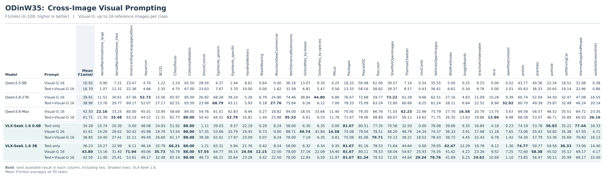
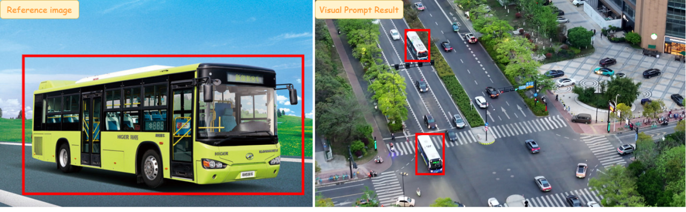
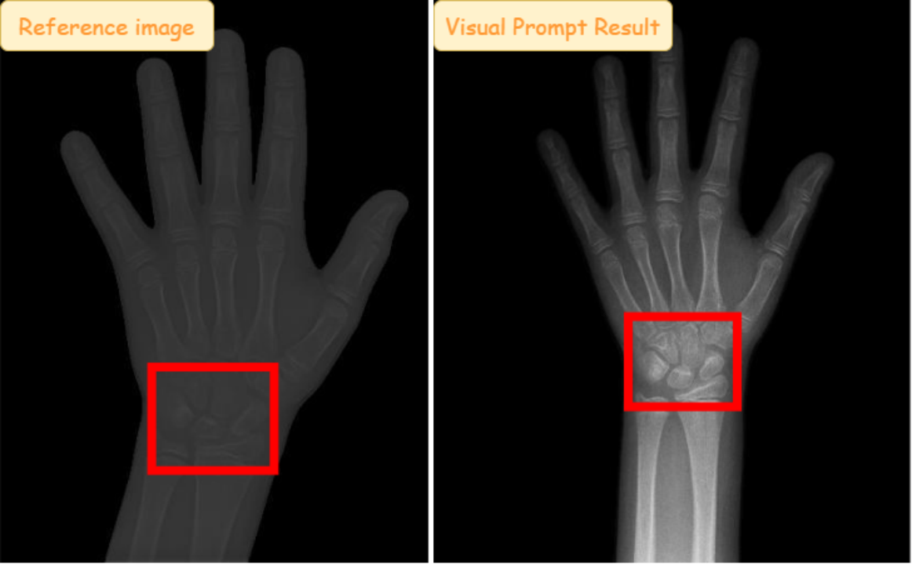
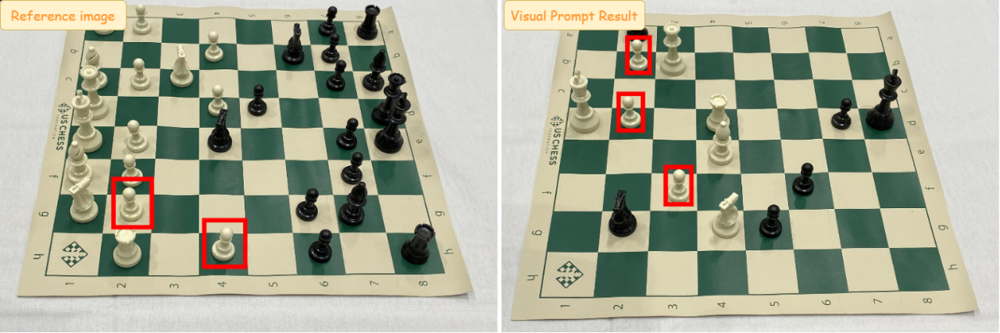
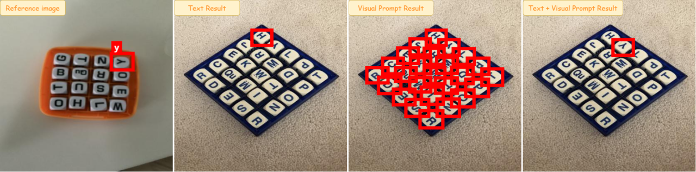
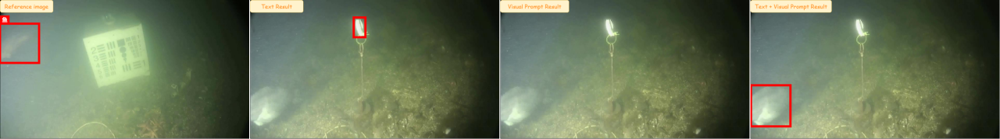

亮点
- 跨图区域级视觉样例：以参考图中指定的目标区域为提示单元，将区域视觉特征直接接入模型上下文，引导模型在新图中检测对应目标。
- 多样例上下文学习：将多个视觉正样例作为上下文参考，综合不同样例的外观信息识别目标；支持纯视觉与文本加视觉两种检测模式。
- 高效可复用的参考表示：样例侧视觉特征 token 数由参考区域数决定，参考特征可预先编码并复用于后续待测图。
- 强劲的视觉提示检测性能：VLX-Seek 1.6-3B 在 ODinW35 跨图视觉样例检测任务上达到 43.80 F1mIoU，高于更大参数量级的开源和闭源大模型。
引言
VLX-Seek 1.6 在区域引用检测架构上引入 RT-ICL（Region-Token In-Context Learning with Cross-Image Exemplars，基于 Region Token 的跨图视觉样例上下文学习）。它将独立参考图中的正视觉样例编码为区域级上下文，用于新图上的目标检测。模型支持纯视觉多样例提示，以及文本标签与视觉样例的联合提示，无需针对当前参考集更新模型参数。
本次升级的核心是视觉样例的表示与使用方式：每个参考区域对应一个独立的 region token，多个样例与待测图共同进入多模态大模型上下文。模型通过上下文学习，依据视觉样例所定义的目标，在待测图中检测对应对象。这一设计保留样例间的差异，并压缩样例侧的视觉序列；文本提示检测性能与 VLX-Seek 1.5 保持一致，同时扩展了跨图视觉条件化能力。
1. 视觉提示的技术路径与表示局限
文本提示通过类别名称或描述指定目标，但自然语言标签有时无法充分表达目标外观与实际标注范围。视觉提示直接提供目标实例，使模型能够利用形状、纹理和结构等视觉证据确定检测对象。以交通锥为例，用户可以在独立参考图中框选交通锥，再将这组样例用于其他道路图像，而无需逐图添加人工提示。
按照提示来源，可以区分两类视觉提示：Visual-I（Interactive，图内交互式视觉提示）从当前待测图中选取目标框，用于同图交互式检测；Visual-G（Generic，跨图通用视觉提示）从独立参考图中提取视觉信息，用于新图检测。这里的 G 表示 Generic（通用），不是 Global（全局）。Visual-I 需要在当前图像上进行交互；当同一组参考样例要应用于多张新图时，Visual-G 可以复用独立参考图，更适合固定目标概念下的批量检测。
1.1 专用检测模型：类别级样例聚合
YOLOE、T-Rex2 等专用检测模型已支持跨图视觉提示。在其通用视觉提示设定中，同类参考样例的特征被平均聚合为类别级 embedding，形成可复用的目标表示。但提前聚合也使后续预测无法直接访问各样例的独立表示，不同视角、外观和局部结构的差异可能被弱化。
1.2 SAM 3：同图与同视频内的视觉样例提示
SAM 3 支持通过 exemplar（视觉样例）、文本或二者的组合指定视觉概念，并分割匹配实例。但其标准推理流程以当前图像或同一视频为单位，不支持将多张独立参考图中的样例直接用于另一张待测图，限制了参考样例在不同图像之间的复用。
1.3 通用 VLM：图像级样例输入的上下文开销
对于缺少专用区域样例机制的通用 VLM，跨图提示通常通过带框参考图或目标裁剪图实现。带框样例整图需要模型从图像中理解标记所指的对象；裁剪图可以突出目标，但仍需要作为图像编码为一段视觉 token 序列。随着参考数量增加，样例侧上下文也随之增长。本文的通用 VLM 对照采用带框参考整图输入。
RT-ICL 为这一任务提供专用的区域级样例表示：参考框用于指定需要编码的视觉区域，每个区域以一个特征 token 进入语言模型。它在保留独立样例表达能力与跨图复用能力的同时，降低参考样例进入语言模型时的上下文 token 开销，使多个视觉参考能够直接参与检测决策。
2. RT-ICL：区域级视觉样例与上下文条件化检测

图 1：参考区域样例经编码后，以区域样例 token 参与新图上的检测。
2.1 从区域引用到区域样例
VLX-Seek 的既有架构将定位建模为区域检索与区域引用：待测图中的候选区域被表示为可选择、可引用的视觉区域 token，模型通过区域引用返回检测结果。VLX-Seek 1.6 将这一设计扩展到参考侧，使参考图中的指定区域成为定义检测目标的视觉条件。
区域级视觉样例包含两个要素：参考图提供视觉内容，参考框指定其中作为正样例的对象。编码后，模型接收的是该区域的视觉特征，而不是仅描述框坐标的文本，也无需将该区域作为单独裁剪图的完整视觉序列送入语言模型。一张参考图可以提供多个区域，每个区域对应一个独立的区域特征 token。
区域内压缩、区域间保留独立表示，是 RT-ICL 的关键区别。参考区域集合形成样例 token 序列，与待测图、待测候选区域及任务指令共同构成上下文。模型依据这些视觉条件选择符合目标概念的候选区域，再通过既有的 region reference 机制输出定位结果。参考框负责定义目标和提供视觉参考信息；待测图中的候选框由模型（OPN）产生，无需人工逐图框选。
2.2 多样例上下文学习与文本—视觉联合输入
RT-ICL 的 in-context learning 发生在推理阶段：模型参数固定，由当前提供的视觉样例集合确定检测条件。多个区域视觉样例 token 保留了不同参考实例的表示，使模型能够在同一上下文中使用它们提供的互补外观线索，而不必预先将所有实例合并为固定的类别原型。
| 提示模式 | 输入条件 | 适用需求 |
|---|---|---|
| 纯视觉样例 | 多个正样例区域，不提供真实类别名称 | 通过实例外观指定目标，降低对准确命名的依赖 |
| 文本 + 视觉样例 | 相同区域样例与类别名称 | 结合文本的语义约束与样例的外观证据 |
在联合模式下，文本与各区域 token 共同进入上下文，由模型完成条件信息的整合。对交通锥这样的类别，文本提供类别语义，参考区域补充具体视觉实例。更换或补充参考集即可改变当前请求的视觉条件；同一参考集也可持续用于多张新图。
3. 区域级压缩与参考特征复用
相对于带框整图或裁剪图作为图像输入的方案，RT-ICL 的上下文效率来自进入语言模型的样例表示粒度。若参考集共有 N 个目标区域，独立区域表示对应 N 个样例视觉特征 token；而传统 VLM 的图像级输入的视觉序列长度则取决于各参考图或裁剪图编码后的 token 数量。
这将样例上下文的组织单位从图像视觉序列细化到目标区域，使增加参考实例时能够保留各样例的表示，同时控制其上下文占用。相比类别 embedding 聚合，RT-ICL 强调保留多样例信息；相比通用 VLM 的图像级参考输入，则强调更低的样例侧 token 开销。
参考图仍需经过视觉编码，区域压缩不等于消除参考图处理成本。编码后的区域样例特征可缓存并跨请求复用，适用于固定参考集、连续输入新图的检测流程。缓存减少重复编码，但样例 token 仍参与后续模型计算。
4. ODinW35 跨图视觉提示检测评测
ODinW（Object Detection in the Wild）用于评估目标检测模型的跨领域泛化能力。ODinW35 覆盖 35 个检测任务，包含航拍、水下、医学显微和交通等不同场景。我们在这一基准上评估 RT-ICL，考察模型在不进行任务专用微调的情况下，能否利用独立参考图中的区域级正样例，在不同领域的待测图中定位对应目标。
我们在 ODinW35 上评测 VLX-Seek 1.6 的 0.6B、3B 两个规格，并与 Qwen3.5-9B、Qwen3.8-27B 和 Qwen3.8-Max 比较。两种视觉提示设置分别为：
- Visual-G 16：每类最多 16 张参考图及相应目标区域样例，不提供真实类别名称。
- Text+Visual-G 16：使用相同视觉参考，同时提供真实类别名称。
参考图取自各任务对应的训练集，按类别构建参考集：每个类别选取最多 16 张包含该类目标的图像，并使用其中该类别的标注框指定视觉正样例。参考图与待测图分离；训练集中的图像及区域标注仅作为推理时的上下文参考，不用于本次评测的任务专用微调或参数更新。

表 1：ODinW35 完整评测结果。分数按 0–100 标度报告，越高越好。
在已有结果中，3B 模型在两种设定下均取得最高分，相对 Qwen3.8-Max 分别高 1.30 和 0.79 个点。与同规格模型自身的文本检测相比，视觉参考在两个模型规格上均带来超过 7 个点的提升。
Visual-G 16 直接通过参考图中的区域样例提供目标外观与标注范围，不使用文本标签，因此能够减少对标签字面含义和既有语义联想的依赖。逐任务结果也体现了这一点：3B 模型在 AmericanSignLanguageLetters 上的 F1mIoU 从 Text-only 的 6.11 提升至 Visual-G 16 的 71.94，在 DroneControl 上从 1.21 提升至 57.55。
评测指标和设定：当前评估方式对测试图中的 GT 类别分别进行检测，再合并各类别结果进行图像级评分。每个 IoU 阈值下先对图像的 precision、recall 分别取平均，再计算 F1；平均 0.50–0.95 共 10 个阈值的 F1 后得到每个任务的 F1mIoU，最后对 35 个任务等权平均。

图 4-1：ODinW35 Visual-G 16 评估中的准确率—输入 token 效率对比。横轴为累计输入 token，点大小表示模型规模，纵轴为 Mean F1mIoU。
在 ODinW35 的 Visual-G 16 评估中，VLX-Seek 1.6 3B 仅使用 30.11M 个累计输入 token，而对照模型均使用约 361.95M 个 token，输入量减少 91.68%。同时，VLX-Seek 1.6 取得 43.80 的 Mean F1mIoU，高于参数规模远大的 Qwen3.8-Max（42.50），形成更好的准确率—token 效率折中。
5. 分析实验：样例数量与文本—视觉互补性
5.1 参考集扩展带来的检测增益
为检验 RT-ICL 能否有效利用更多视觉样例，我们以 VLX-Seek 1.6 3B 为对象，在 ODinW35 的纯视觉提示（Visual-G）设置下开展参考数量对照实验。每类参考图数量上限分别设为 1、2、8 和 16 张，四种设置下的 F1mIoU 分别为 38.15、39.40、43.08 和 43.80。参考图上限从 1 张增加到 16 张时，分数提升 5.65 个点。
5.2 有效的文本语义进一步提升视觉提示检测
联合输入的收益取决于文本语义与检测目标是否一致。在 ODinW13 子集上，VLX-Seek 1.6 3B 的 Text-only 为 66.09，Visual-G 16 为 65.58，Text+Visual-G 16 达到 68.02。联合输入比纯视觉高 2.44 个点，也比纯文本高 1.93 个点。

图 5-1：参考集扩展带来的增益，以及 ODinW13 上文本与视觉样例的互补性。
| 模型 | Text-only | Visual-G 16 | 相对 Text-only 的增益 |
|---|---|---|---|
| VLX-Seek 1.6-0.6B | 34.28 | 41.61 | +7.33 |
| VLX-Seek 1.6-3B | 36.23 | 43.80 | +7.57 |
ODinW13 的类别标签总体上与检测对象具有较直接的语义对应关系，文本提供类别知识，视觉样例补充具体外观与定位范围。相比之下，ODinW35 中部分任务存在标签歧义或标注范围偏差，因此文本可能干扰视觉样例所定义的目标。RT-ICL 支持根据任务选择输入方式：类别名称准确时可采用文本加视觉样例；标签含义不明确时可使用纯视觉样例直接定义目标。
6. 跨图检测案例
下面展示三类典型案例：跨视角迁移、视觉样例对难描述目标的表达，以及文本与视觉样例的互补。
6.1 跨视角与跨尺度检测
参考图与待测图不需要具有相同视角。公交车、汽车和垃圾桶案例中，参考图来自近距离或地面视角，待测图来自无人机视角，目标在尺度、背景和观察角度上均发生变化。模型仍能根据参考区域中的外观和结构信息，在新的场景中定位对应目标。

图 6-1：近距离公交车参考图与无人机道路场景中的跨视角定位。

图 6-2：车辆参考图在航拍道路场景中的跨视角、多目标检测。

图 6-3：垃圾桶参考图与无人机道路场景之间的视角和尺度变化。
6.2 视觉样例比短文本更具体
对于专业领域目标或细粒度局部目标，短类别名称往往难以完整表达目标的外观与标注范围。参考区域直接提供目标实例，使模型能够从视觉证据中理解检测对象和定位粒度。

图 6-4：视觉样例对细粒度、带缺陷鱼尾板目标的外观和定位范围进行具体表达。

图 6-5：视觉样例帮助模型定位医学影像中的局部手腕目标。

图 6-6：视觉样例帮助区分棋盘场景中的相似目标。
6.3 文本与视觉样例互补
文本可以提供类别语义，但在符号、局部外观或语义容易混淆的目标上，单独使用文本可能产生错误匹配。视觉样例提供具体外观信息，文本提供语义约束，二者联合后可以改善目标选择。

图 6-7：文本与视觉样例的互补，联合提示定位到正确的字母目标。

图 6-8：复杂场景中的文本、视觉与联合提示检测结果对比。
7. 总结
VLX-Seek 1.6 将区域引用架构扩展为支持跨图正样例的上下文检测框架。RT-ICL 以区域为视觉提示单元，在压缩单个样例表示的同时保留样例间的独立性，并将其与可选文本、待测区域共同交由多模态大模型处理，实现推理阶段的上下文学习。ODinW35 结果展示了该设计在端侧模型规格上的检测竞争力；参考数量实验与 ODinW13 结果进一步体现了多样例输入和文本—视觉联合提示的价值。